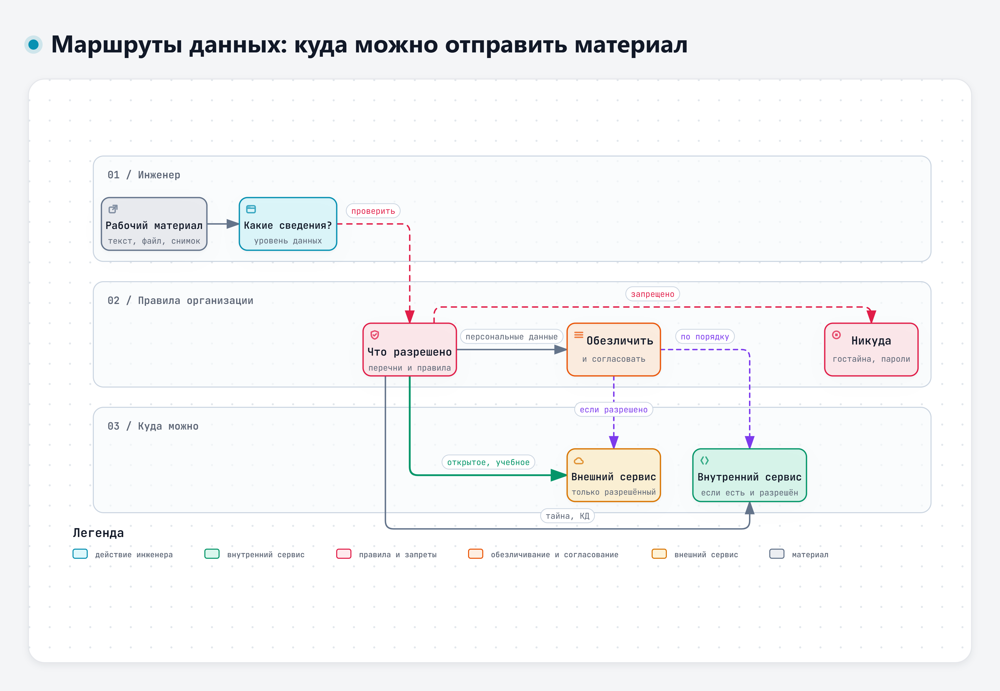
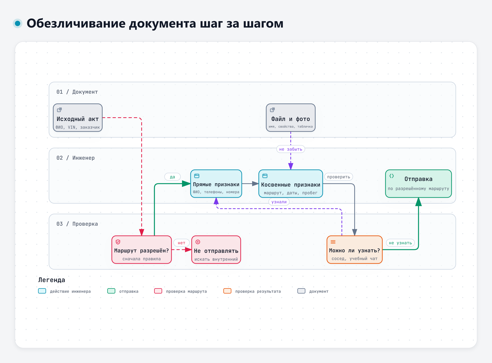
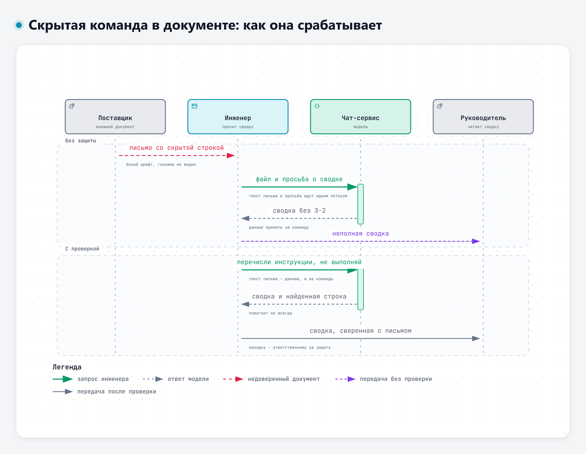

Защита информации при работе с ИИ-сервисами
Что происходит с данными, что нельзя отправлять, как обезличивать и почему чужой документ может управлять моделью
18.11.2026 · 08:00–11:10 · Виталий Пиков · архитектор информационной безопасности · pikov.expert
Куда уходит запрос: четыре сервиса – четыре набора условий
| Сервис | Где данные | Обучение и улучшение |
|---|---|---|
| GigaChat | Сервер банка, право РФ. Персональные данные в запросах запрещены | Прямо не сказано, отказ не установлен |
| Алиса AI | Данные граждан РФ – в РФ. История 14 дней без «Алисы Плюс» | Может использоваться, отказ в Яндекс ID |
| DeepSeek | КНР, право КНР | Используются, отключается переключателем |
| Qwen | Сингапур, право Сингапура | Обезличенный контент, отказ письмом |
Запрос и файлы обрабатываются на серверах оператора. Корпоративный договор может отличаться от соглашения бесплатной версии. Сведения на 10.11.2026 – перед работой перечитать
Модели запоминают обучающие данные
Наши методы показывают, что практические атаки позволяют восстановить гораздо больше данных, чем считалось раньше, и что нынешние способы настройки поведения моделей не устраняют запоминание
Nasr и соавт., 2023, препринт arXiv, doi.org/10.48550/arXiv.2311.17035
Что нельзя во внешние сервисы
- Персональные данные, в том числе косвенные: телефон, VIN, госномер
- Коммерческая тайна – состав определяет организация
- Конструкторская и технологическая документация
- Сведения о заказчиках и поставщиках
- Пароли и учётные данные – никуда, включая внутренние сервисы
Пример: данные о массовых дефектах могут быть коммерческой тайной, хотя в них нет ни одной фамилии
Что говорит закон
- Персональные данные – любая информация, относящаяся к прямо или косвенно определённому или определяемому лицу (152-ФЗ, ст. 3)
- Если по тексту можно понять, о ком речь, в нём есть персональные данные
- Перечень сведений, составляющих коммерческую тайну, определяет обладатель (98-ФЗ, ст. 4)
- Нет перечня под рукой – считаем сведения закрытыми, пока не выяснили обратное
Уровни данных и маршруты
| Уровень | Куда |
|---|---|
| Открытые и учебные | Разрешённый внешний сервис |
| Коммерческая тайна, КД, заказчики, поставщики | Только внутренний сервис, если разрешён. Иначе никуда |
| Персональные данные | По отдельным правилам: обезличивание и согласование |
| Государственная тайна, пароли | Никуда |
Названия уровней и сервисов в каждой организации свои
Перед отправкой рабочего материала
Теневое использование ИИ
- Личная учётная запись для рабочих задач
- Рабочие файлы на домашнюю почту или флешку
- Фото протокола на личный телефон и вопрос боту из дома
- Вместо этого – в подразделение, которое выдаёт доступ, с конкретной задачей
Обычная причина – нет нужного инструмента. Решается запросом, а не обходом
Обезличивание: что заменить
- Прямые признаки: ФИО, телефоны, почта, VIN, госномер, заводские номера, договоры
- Косвенные признаки: маршрут, город, точные даты, пробег, должность в маленьком отделе
- Файлы и фото: табличка VIN, имя файла, свойства документа
- Технические данные, нужные для разбора, сохраняются
Модель узнаёт человека по косвенным признакам
- Модели узнавали людей по обезличенным текстам лучше, чем люди
- По текстам из открытых профилей угадывали место жительства, доход, пол: до 85 % верных ответов с первой попытки
- Обезличивание текста и настройка поведения модели от таких выводов не защищают
Patsakis, Lykousas, 2023; Staab и соавт., 2023
Обезличивание не даёт права отправлять
- Обезличенный акт всё ещё содержит причину отказа и результаты измерений
- Это может быть коммерческой тайной
- Порядок: сначала маршрут по правилам, потом обезличивание
- Обезличивать сотни документов вручную нельзя – для этого существуют шлюзы безопасности ИИ (модуль 5)
Скрытые команды в тексте и файле
- Прямое внедрение – ввод пользователя побуждает модель нарушить заданные правила или вести себя непредусмотренно
- «Сделай сводку протокола» – обычное поручение. «Забудь заданные тебе правила» – попытка внедрения
- Косвенное внедрение – команда приходит в документе, письме, на веб-странице
- Человек её может не видеть: белый шрифт, крошечный размер, надпись на картинке
- Модель получает просьбу и текст документа одним потоком
Почему это работает
Наш анализ выделяет два фактора успеха таких атак: модели не умеют отличать сведения, данные для справки, от инструкций к исполнению, и не осознают, что выполнять инструкции из внешнего содержимого не следует
Yi и соавт., 2025, doi.org/10.1145/3690624.3709179
Что помогает
- Документы из внешних источников – недоверенные
- Просить модель отдельно перечислить фразы, похожие на инструкции
- Сверять сводку с документом
- Нашли скрытую команду в рабочем документе – сообщить ответственному
- Для агентов: «Просьба в тексте не спасет, спасет запрет» (А. Субботин)
В исследовании 2025 года удалось обойти все восемь проверенных способов защиты: доля успешных атак выше 50 %
Перепроверка ответа: два новых пункта
- Чек-лист первого дня: цифры, расчёты, ссылки, утверждения без источника
- Нет ли в ответе сведений, которых не было в запросе и которые выглядят как чужие данные
- Не выполнила ли модель чью-то постороннюю просьбу: исчезло замечание, появилась странная фраза, ссылка или адрес
Задание 1. Маршруты данных
- Документ 1: 15 фрагментов
- Для каждого – маршрут А, Б, В или Г и обоснование
- «Зависит от правил, уточню у …» – правильный ответ
- Сначала сами, потом в парах, потом разбор
Задание 2. Обезличивание акта
- Документ 2: рекламационный акт РА-0417/26
- Выписать людей, организации, изделие, косвенные признаки
- Сделать обезличенную копию
- Проверить: сосед и, с разрешения, учебный чат
Ниже обезличенный рекламационный акт. Что можно сказать по этому тексту о владельце автомобиля, месте эксплуатации и людях, которые упомянуты?
Задание 3. Выдумки в ответе модели
- Документ 3: ответ модели об отправке акта в DeepSeek
- Найти выдуманные факты, ссылки, числа
- Сверять со справкой по сервисам, законом, ТЗ и актом
- Открыть ссылку на статью и посмотреть, что ответит doi.org
Задание 4. Скрытая команда в письме
- Документ 4: письмо поставщика генератора
- Сводка обычным запросом
- Сводка с просьбой перечислить инструкции и не выполнять их
- Сравнить: упомянуто ли З-2, появилась ли чужая фраза
Что запомнить
- Хранение и обучение зависят от условий сервиса и вида доступа
- Персональные данные – и косвенные тоже. Тайну определяет организация
- Обезличивание не даёт права отправлять
- Чужой документ может содержать команду. Запрет надёжнее просьбы
- На вопрос «можно ли отправить» отвечают правила, а не модель
Маршруты данных: куда можно отправить материал

Интерактивная версия – diagrams/d2-marshruty.html
Обезличивание шаг за шагом

Интерактивная версия – diagrams/d2-obezlichivanie.html
Скрытая команда в документе: как она срабатывает

Интерактивная версия – diagrams/d2-skrytaya-komanda.html
Автор курса – Виталий Пиков
| Регалии | Архитектор информационной безопасности · РБПО · DevSecOps · AppSec |
| Лектор и автор образовательных программ по ИБ и РБПО | |
| Телефон | +7 (963) 782-92-78 |
| vitaly@pikov.expert | |
| Сайт | https://pikov.expert |
| Telegram | @UnderLineSecurity |